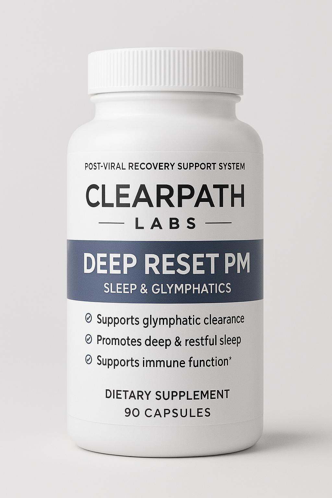
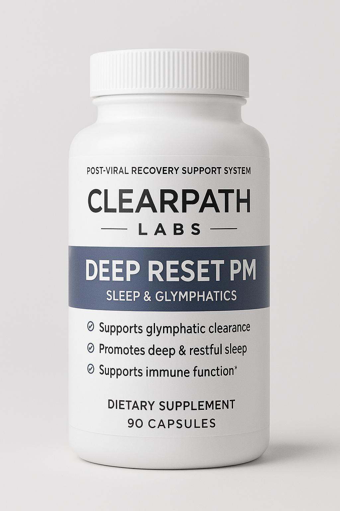

Is Clear Flow a medical treatment?
No. Clear Flow is a nutritional supplement system intended to support general health,
recovery, and nervous system balance. It is not intended to diagnose, treat, cure, or
prevent any disease, and it is not a replacement for medical care.
Can I use Clear Flow with my current medications?
Always speak with your healthcare provider before adding any new supplement, especially
if you take medications, have a medical condition, are pregnant, or breastfeeding.
How long should I use the system?
Many people think in terms of a multi-month recovery arc. Work with your clinician to
determine how Clear Flow fits into your broader plan and how long it makes sense for
you personally.
 
